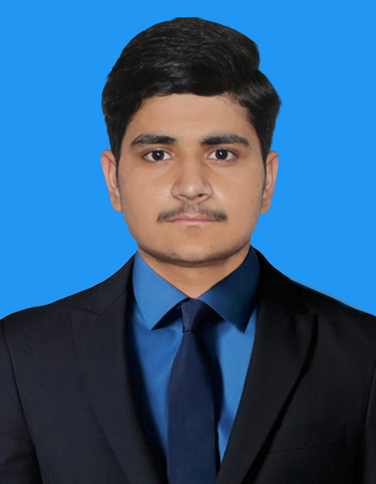

MUHAMMAD ALI
Junior Software Developer
CONTACT
- Email: ali2002ameenbashir@gmail.com
- Github: https://github.com/ali8642
- Phone: 0313-2809966
- Address: Karachi, Sindh, Pakistan, 75120
ABOUT ME
Beginner-level full-stack developer with a strong work ethic and a desire to learn and grow. Excited about the opportunity to contribute to a team and gain practical experience in web development and software development.
EDUCATION
Economics
- Jan, 2022 - Progress
- FEDERAL URDU UNIVERSITY (FUUAST) - Abdul Haq Campus, Karachi
Modern Web Application Development
- Feb, 2025 - Progress
- Saylani Mass IT Training (SMIT) - Zaitoon Ashraf IT Park
CERTIFICATIONS
Advanced English Learning
- SOS Infaq Education Foundation
- HTML & CSS
- SOS Infaq Education Foundation
TECHNICAL SKILLS
HTML, CSS, javascript, Python
SOFT SKILLS
Teamwork, problem-solving, Negotiation, Time management, attention to detail,
LANGUAGES
English, Urdu, Korean